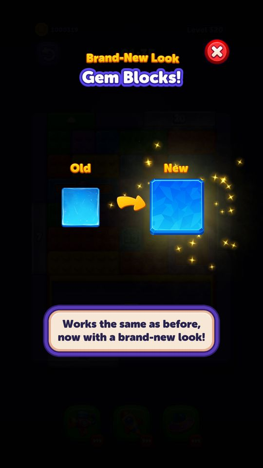
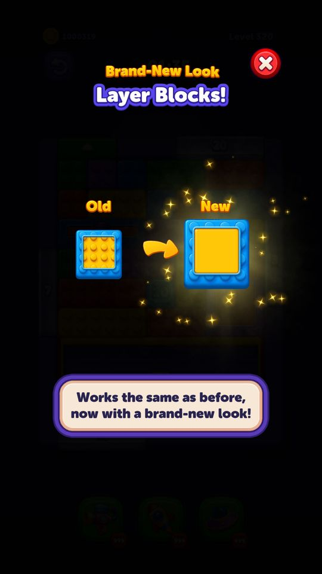
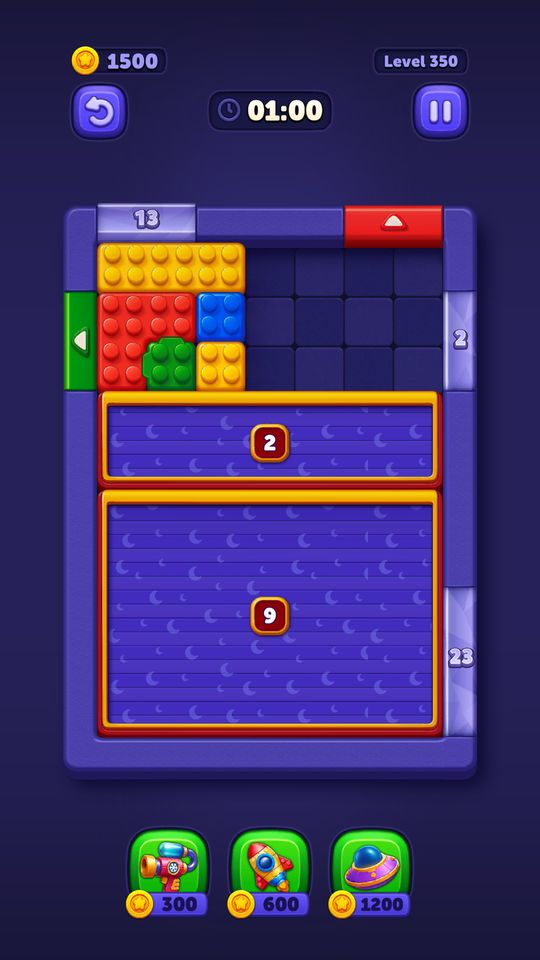
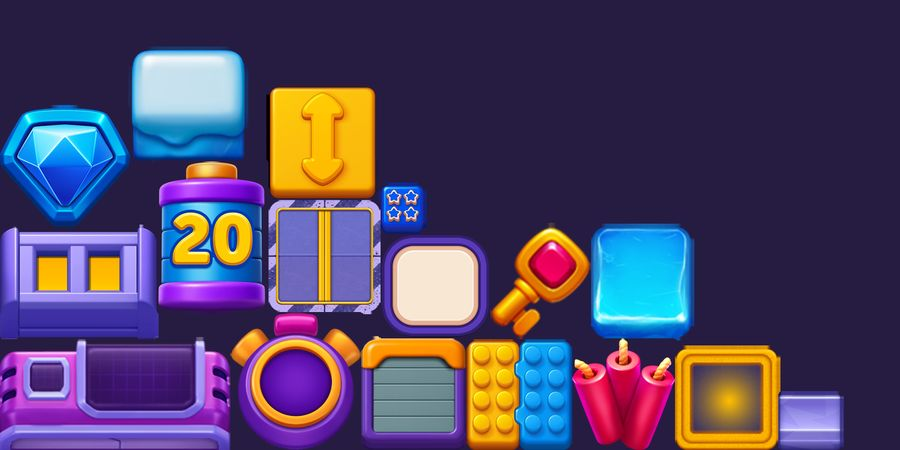

Vật cản và cơ chế màn
Block Out! có 22 cơ chế cản trở, mở dần theo cấp độ từ màn 6 tới màn 900.
Mô tả
- Block Out! có 22 cơ chế cản trở, mở dần theo cấp độ từ màn 6 tới màn 900.
- Chúng chia làm ba nhóm: vật cản gắn trên khối (băng, khoá, sao, bom, lớp phủ, mũi tên, băng di động, lớp chồng, đồng hồ), vật cản gắn trên cửa (cửa băng, cửa sao, cửa luân phiên, dây leo), và vật thể chiếm ô trên bàn (generator, thang máy, rèm che, ô màu, máy nghiền, generator trong bàn).
- Mỗi cơ chế có một class kế thừa BlockObstacle hoặc DoorObstacle, ghi đè các câu hỏi quan trọng: khối này có di chuyển được không (CanMove), có qua cửa được không (CanPassDoor), booster có dùng lên nó được không.
Còn thiếu / chưa xác minh
Mở khóa & điểm vào
ObstacleIntroConfigModel quy định màn mở từng cơ chế. Bảng server đang chạy: IceDoor 6, IceBlock 10, LayerBlock 15, CurtainLock 20, Generator 35, ArrowBlock 50, Elevator 65, LockBlock 80, StarBlock 100, BombBlock 120, TurnBasedDoor 150, ColorCell 200, Grinder 250, DurationBlock 300, ConnectedBlock 350, InBoardGenerator 400, ColorCurtainLock 500, MovingIce 600, Ivy 700, StackedLayer 800, ColorGrinder 900. LayeredIce = -1 nghĩa là tắt.
Điểm vào:
- Popup giới thiệu cơ chế mới trước khi vào màn
- Bố cục màn chứa sẵn vật cản
Cách hoạt động
- Khi nạp màn, LevelModelService.TryGetObstacleTypeToIntroduce(progress, out kind) đối chiếu tiến độ người chơi với ObstacleIntroConfigModel để xem có cơ chế nào cần giới thiệu không; GetIsObstacleIntroduced kiểm tra đã dạy chưa và SaveBlockerIsIntroduced ghi lại.
- Song song, ObstacleMigrationService lo trường hợp khác: người chơi cũ đã quen bản cũ của một vật cản, nay studio đổi hình/luật thì cần popup báo — SelectObstacleMigrationKindToShow quét LevelModel xem màn sắp chơi có chứa cơ chế nào vừa đổi (IsV2Enabled đọc ArtReworkToggleConfigModel) và chưa báo cho người này (ObstacleMigrationDataService.IsShown).
- SpawnerSystem/ObstacleFactory dựng từng vật cản từ dữ liệu màn.
- Trong lúc chơi, mỗi lần một khối rời bàn thì mọi vật cản đều nhận OnBlockExitFromBoard để tự cập nhật: băng bong một lớp, rèm mở dần, khoá đếm lùi.
- Khi dùng booster, các vật cản nhận OnBoosterSelected / BoosterUsedOnBlockPostAnimation / OnBoosterUsageCanExitDoor để quyết định có cho khối thoát hay không.
Luồng chi tiết theo code
Khi nạp màn, LevelModelService.TryGetObstacleTypeToIntroduce(progress, out kind) đối chiếu tiến độ người chơi với ObstacleIntroConfigModel để xem có cơ chế nào cần giới thiệu không; GetIsObstacleIntroduced kiểm tra đã dạy chưa và SaveBlockerIsIntroduced ghi lại. Song song, ObstacleMigrationService lo trường hợp khác: người chơi cũ đã quen bản cũ của một vật cản, nay studio đổi hình/luật thì cần popup báo — SelectObstacleMigrationKindToShow quét LevelModel xem màn sắp chơi có chứa cơ chế nào vừa đổi (IsV2Enabled đọc ArtReworkToggleConfigModel) và chưa báo cho người này (ObstacleMigrationDataService.IsShown). SpawnerSystem/ObstacleFactory dựng từng vật cản từ dữ liệu màn. Trong lúc chơi, mỗi lần một khối rời bàn thì mọi vật cản đều nhận OnBlockExitFromBoard để tự cập nhật: băng bong một lớp, rèm mở dần, khoá đếm lùi. Khi dùng booster, các vật cản nhận OnBoosterSelected / BoosterUsedOnBlockPostAnimation / OnBoosterUsageCanExitDoor để quyết định có cho khối thoát hay không.
Ảnh chụp màn hình (6)
5 ảnh chụp trong game (LDPlayer, bản 1006, tài khoản thử level 320 → 350 (07/10/2026)); 1 ảnh tài nguyên trong APK. Bấm ảnh để phóng to; nhãn UC dẫn tới use case tương ứng.










Số liệu chính
| Chỉ số | Giá trị | Nguồn |
|---|---|---|
| ObstacleIntroConfigModel.ArrowBlock | 50 | ObstacleIntroConfigModel.ArrowBlock — Assets/Resources/defaultconfigs/ObstacleIntroConfigModel.json |
| ObstacleIntroConfigModel.IceDoor | 6 | ObstacleIntroConfigModel.IceDoor — Assets/Resources/defaultconfigs/ObstacleIntroConfigModel.json |
| ObstacleIntroConfigModel.IceBlock | 10 | ObstacleIntroConfigModel.IceBlock — Assets/Resources/defaultconfigs/ObstacleIntroConfigModel.json |
| ObstacleIntroConfigModel.Generator | 35 | ObstacleIntroConfigModel.Generator — Assets/Resources/defaultconfigs/ObstacleIntroConfigModel.json |
| ObstacleIntroConfigModel.CurtainLock | 20 | ObstacleIntroConfigModel.CurtainLock — Assets/Resources/defaultconfigs/ObstacleIntroConfigModel.json |
| ObstacleIntroConfigModel.Elevator | 65 | ObstacleIntroConfigModel.Elevator — Assets/Resources/defaultconfigs/ObstacleIntroConfigModel.json |
| ObstacleIntroConfigModel.LockBlock | 80 | ObstacleIntroConfigModel.LockBlock — Assets/Resources/defaultconfigs/ObstacleIntroConfigModel.json |
| ObstacleIntroConfigModel.StarBlock | 100 | ObstacleIntroConfigModel.StarBlock — Assets/Resources/defaultconfigs/ObstacleIntroConfigModel.json |
| ObstacleIntroConfigModel.BombBlock | 120 | ObstacleIntroConfigModel.BombBlock — Assets/Resources/defaultconfigs/ObstacleIntroConfigModel.json |
| ObstacleIntroConfigModel.TurnBasedDoor | 150 | ObstacleIntroConfigModel.TurnBasedDoor — Assets/Resources/defaultconfigs/ObstacleIntroConfigModel.json |
| ObstacleIntroConfigModel.LayerBlock | 15 | ObstacleIntroConfigModel.LayerBlock — Assets/Resources/defaultconfigs/ObstacleIntroConfigModel.json |
| ObstacleIntroConfigModel.ColorCell | 200 | ObstacleIntroConfigModel.ColorCell — Assets/Resources/defaultconfigs/ObstacleIntroConfigModel.json |
| ObstacleIntroConfigModel.Grinder | 250 | ObstacleIntroConfigModel.Grinder — Assets/Resources/defaultconfigs/ObstacleIntroConfigModel.json |
| ObstacleIntroConfigModel.DurationBlock | 300 | ObstacleIntroConfigModel.DurationBlock — Assets/Resources/defaultconfigs/ObstacleIntroConfigModel.json |
| ObstacleIntroConfigModel.ConnectedBlock | 350 | ObstacleIntroConfigModel.ConnectedBlock — Assets/Resources/defaultconfigs/ObstacleIntroConfigModel.json |
| ObstacleIntroConfigModel.ColorCurtainLock | 500 | ObstacleIntroConfigModel.ColorCurtainLock — Assets/Resources/defaultconfigs/ObstacleIntroConfigModel.json |
| ObstacleIntroConfigModel.InBoardGenerator | 400 | ObstacleIntroConfigModel.InBoardGenerator — Assets/Resources/defaultconfigs/ObstacleIntroConfigModel.json |
| ObstacleIntroConfigModel.LayeredIce | -1 | ObstacleIntroConfigModel.LayeredIce — Assets/Resources/defaultconfigs/ObstacleIntroConfigModel.json |
Use case (18)
Bấm vào từng use case để mở. Mở/đóng tất cả
UC-01 Giới thiệu cơ chế mới trước khi vào màn
Các bước- LevelModelService.TryGetObstacleTypeToIntroduce(progress, out obstacleKind)
- GetIsObstacleIntroduced(obstacleKind) trả false
- NewObstacleIntroPopUp mở với NewObstacleIntroPopUpArguments
- SaveBlockerIsIntroduced(obstacleKind) ghi cờ đã dạy
| Actor | System |
|---|---|
| Trigger | Tiến độ chạm mốc trong ObstacleIntroConfigModel |
| Điều kiện | Cơ chế đó chưa từng được dạy cho tài khoản này |
| Kết quả | Người chơi xem hướng dẫn một lần rồi vào màn |
| Quy tắc / số liệu | Mốc lấy từ bản server (BackendObstacleIntroConfigName = 21-08-26-obstacle-colorgrinder), không phải bản client mặc định (29-07-26-obstacle-ivy-base) |
| Evidence | LevelModelService.TryGetObstacleTypeToIntroduce; GetIsObstacleIntroduced; SaveBlockerIsIntroduced; NewObstacleIntroPopUp |
UC-02 Báo vật cản đã đổi hình (art rework)
Các bước- ObstacleMigrationService.SelectObstacleMigrationKindToShow(levelModel)
- IsLevelModelContainsObstacle kiểm tra màn có chứa cơ chế đó
- IsV2Enabled(kind) đọc cờ tương ứng trong ArtReworkToggleConfigModel
- CompareLevelToIntro so tiến độ với GetIntroLevel(kind)
- ObstacleMigrationDataService.IsShown(kind) trả false -> ShowObstacleMigrationPopUp(kind)
- SetShown(kind, true)
| Actor | System |
|---|---|
| Trigger | Vào màn có vật cản vừa được làm lại hình |
| Điều kiện | ArtReworkToggleConfigModel bật biến thể mới và người chơi chưa được báo |
| Kết quả | Popup giải thích hình mới, chỉ hiện một lần cho mỗi cơ chế |
| Quy tắc / số liệu | Server đang bật 9 biến thể mới: NewIceDoor, NewStar, DoorCue, NewDoorExitV2, NewColorCell, NewGenerator, NewInBoardGenerator, NewLayerBlock, NewLockAndKey. Client mặc định chỉ bật NewDurationBlock, NewIceBlock, NewBomb |
| Evidence | ObstacleMigrationService.SelectObstacleMigrationKindToShow; IsV2Enabled; ObstacleMigrationDataService.IsShown; ArtReworkToggleConfigModel |
UC-03 Khối băng — phá từng lớp
Các bước- IceBlockObstacle.SetIceBlockValues(iceBlockCount) đặt số lớp băng lúc dựng màn
- CanMove() = false, CanPassDoor() = false khi còn băng
- Mỗi khối khác rời bàn -> OnBlockExitFromBoard -> OnDamage(viaBooster)
- Hết lớp -> UpdateBlockAfterIceComplete + PlayDeactivateAnimation
- Khối trở lại bình thường
| Actor | Player |
|---|---|
| Trigger | Một khối bất kỳ rời bàn |
| Điều kiện | Màn có IceBlockObstacle (từ màn 10) |
| Kết quả | Khối băng dần lộ ra và chơi được |
| Quy tắc / số liệu | Số lớp băng lấy từ BlockIceCount trong file màn. 343/999 màn có khối băng. OnOverlayObstacleHitByRocket cho phép rocket phá băng trực tiếp |
| Evidence | IceBlockObstacle.SetIceBlockValues; CanMove; OnBlockExitFromBoard; OnDamage; UpdateBlockAfterIceComplete |
UC-04 Khối khoá và chìa
Các bước- LockBlockObstacle.Prepare(lockId, keyIds) gán số khoá và danh sách id chìa
- KeyLockPairHandler ghép cặp chìa–khoá lúc dựng màn
- SetLockCountText hiện số khoá còn lại
- Khối mang KeyCollectable ra cửa -> PlayHitLockAnimation rồi PlayOpenLockAnimation
- Hết khoá -> CanMove() trả true
| Actor | Player |
|---|---|
| Trigger | Khối mang chìa rời bàn |
| Điều kiện | Màn có LockBlockObstacle (từ màn 80 theo cấu hình; bố cục thật có từ màn 59) |
| Kết quả | Khối mở khoá và di chuyển được |
| Quy tắc / số liệu | KeyId / LockId / LockKeyIds nằm trong dữ liệu từng khối. CollectableKind chỉ có Key=1. KeyLockColorType có 6 màu: Red, Blue, Green, Purple, Turqoise, Orange |
| Evidence | LockBlockObstacle.Prepare; SetLockCountText; PlayOpenLockAnimation; KeyLockPairHandler; enum KeyLockColorType |
UC-05 Khối bom đếm ngược
Các bước- BombBlockObstacle.Prepare(bombDuration) đặt giờ từ BombDuration trong dữ liệu khối
- ActivateObstacle bật đồng hồ; SecondUpdate giảm mỗi giây
- SetBombStartOffset canh vị trí số đếm theo hình khối
- Về 0 -> BombTimeUp -> thua ngay (LevelWinLoseReason.Bomb)
- Đưa khối bom ra cửa trước khi hết giờ thì OnBlockExitFromBoard huỷ bom
| Actor | System |
|---|---|
| Trigger | Vào màn có bom |
| Điều kiện | Màn có BombBlockObstacle (từ màn 120) |
| Kết quả | Áp lực thời gian riêng, độc lập với đồng hồ màn |
| Quy tắc / số liệu | BombAnimationTime = 5 giây. OnFreezeTimerUsed: booster Time Freeze cũng đóng băng đồng hồ bom. PlayOnBomb(extraTime) cộng giờ khi mua Play On — server để 30 giây |
| Evidence | BombBlockObstacle.Prepare; SecondUpdate; BombTimeUp; OnFreezeTimerUsed; PlayOnBomb; const BombAnimationTime |
UC-06 Khối mũi tên — chỉ đi một trục
Các bước- ArrowBlockObstacle.Prepare(axis) nhận BlockMovementAxis từ BlockArrowDirection
- SetArrowObstacleAxis khoá trục còn lại
- Input chỉ cho trượt theo trục cho phép
| Actor | Player |
|---|---|
| Trigger | Kéo khối có mũi tên |
| Điều kiện | Màn có ArrowBlockObstacle (từ màn 50) |
| Kết quả | Khối chỉ trượt ngang hoặc chỉ trượt dọc |
| Quy tắc / số liệu | BlockMovementAxis: None=0, Horizontal=1, Vertical=2. 156/999 màn có khối mũi tên |
| Evidence | ArrowBlockObstacle.Prepare; SetArrowObstacleAxis; enum BlockMovementAxis |
UC-07 Khối lớp phủ — dưới còn một khối khác
Các bước- LayerBlockObstacle.Prepare(childBlockColorType) nhớ màu khối bên dưới
- Khối phủ ra cửa -> OnBlockExitFromBoard -> SpawnLayerBlock(id, pos, exitedBlock, viaBooster)
- Khối con màu khác hiện ra đúng vị trí cũ
| Actor | Player |
|---|---|
| Trigger | Khối lớp trên rời bàn |
| Điều kiện | Màn có LayerBlockObstacle (từ màn 15) |
| Kết quả | Một ô có thể phải xử lý hai lần |
| Quy tắc / số liệu | IsLayerExists + LayerBlockColorType trong dữ liệu khối. 735/999 màn có — đây là cơ chế phổ biến nhất sau cửa băng. StackedLayerBlockObstacle (từ màn 800) là bản nhiều tầng, dùng StackedLayerBlockColorTypes |
| Evidence | LayerBlockObstacle.Prepare; SpawnLayerBlock; StackedLayerBlockObstacle; appendix/levels.tsv |
UC-08 Cửa băng — phải phá mới dùng được
Các bước- IceDoorObstacle dựng theo DoorIceCount
- Mỗi khối ra cửa khác làm bong một lớp
- Hết băng thì cửa dùng được bình thường
| Actor | Player |
|---|---|
| Trigger | Khối rời bàn |
| Điều kiện | Màn có IceDoorObstacle (từ màn 6) |
| Kết quả | Cửa mở dần trong màn |
| Quy tắc / số liệu | 964/999 màn có cửa băng — cơ chế phổ biến nhất của game |
| Evidence | IceDoorObstacle; DoorIceCount trong file màn; appendix/levels.tsv |
UC-09 Cửa luân phiên đóng mở
Các bước- TurnBasedDoorStartState quy định mở hay đóng lúc đầu (None=0, Open=1, Closed=2)
- Mỗi lần có khối ra cửa thì trạng thái đảo
- Cửa đang đóng thì không nhận khối
| Actor | System |
|---|---|
| Trigger | Mỗi lượt khối rời bàn |
| Điều kiện | Màn có TurnBasedDoorObstacle (từ màn 150) |
| Kết quả | Người chơi phải tính nhịp ra khối |
| Quy tắc / số liệu | 50/999 màn có. Trường TurnBasedDoor trong dữ liệu cửa |
| Evidence | TurnBasedDoorObstacle; enum TurnBasedDoorStartState |
UC-10 Rèm che khoá một vùng bàn
Các bước- CurtainLockModels dựng rèm phủ lên một tập ô, kèm CurtainLockCount
- CellLocker.Curtain đánh dấu các ô đó đang bị khoá
- Mỗi khối ra cửa giảm CurtainLockCount
- Về 0 thì rèm mở, lộ khối bên dưới
- ColorCurtainLock chỉ giảm khi khối ra đúng màu rèm (BlockColorType)
| Actor | Player |
|---|---|
| Trigger | Khối rời bàn |
| Điều kiện | Màn có CurtainLock (từ màn 20) hoặc ColorCurtainLock (từ màn 500) |
| Kết quả | Một phần bàn mở ra giữa chừng |
| Quy tắc / số liệu | 712/999 màn có rèm thường, 280/999 có rèm theo màu |
| Evidence | CurtainLockModels; ColorCurtainLockModels; enum CellLocker; appendix/levels.tsv |
UC-11 Generator sinh thêm khối
Các bước- GeneratorModels / InBoardGeneratorModels dựng máy sinh với danh sách khối chờ
- BlockSpawnPlace quyết định thời điểm sinh: OnBlockExit, OnBlockDeselect, OnBlockExitInGameGenerator, OnGrinderMove, OnBoosterUsed, OnRocketPowerUpHit
- GeneratorExitDirection / InBoardGeneratorExitDirection quy định hướng nhả (Up/Down/Left/Right)
- Khối mới xuất hiện với BlockAnimType.GeneratorSpawn hoặc InBoardSpawn
| Actor | System |
|---|---|
| Trigger | Khối rời bàn hoặc generator được kích hoạt |
| Điều kiện | Màn có Generator (từ màn 35) hoặc InBoardGenerator (từ màn 400) |
| Kết quả | Bàn được tiếp thêm khối, số khối không cố định |
| Quy tắc / số liệu | 144/999 màn có generator viền, 122/999 có generator trong bàn |
| Evidence | SpawnerSystem.SpawnGenerators; SpawnInBoardGenerators; enum BlockSpawnPlace; enum GeneratorExitDirection; enum BlockAnimType |
UC-12 Thang máy chở khối
Các bước- ElevatorModels dựng thang với ElevatorBlockModels bên trong
- ElevatorCellKind phân biệt ô viền trong/ngoài
- CellLocker.Elevator khoá các ô thuộc thang
- IsInElevator trên ConnectedBlockModel đánh dấu khối nằm trong thang
- BlockAnimType.Elevator chạy animation di chuyển
| Actor | System |
|---|---|
| Trigger | Khối được đặt vào thang |
| Điều kiện | Màn có Elevator (từ màn 65) |
| Kết quả | Khối được đưa tới vị trí khác trên bàn |
| Quy tắc / số liệu | 220/999 màn có thang máy |
| Evidence | SpawnerSystem.SpawnElevators; enum ElevatorCellKind; enum CellLocker; enum BlockAnimType |
UC-13 Máy nghiền phá khối
Các bước- GrinderModels / ColorGrinderModels dựng máy ở vị trí quy định
- CellOccupierType.Grinder chiếm ô
- ColorGrinder có GrinderColorType — chỉ nghiền khối đúng màu
- BlockSpawnPlace.OnGrinderMove có thể kích hoạt generator
| Actor | System |
|---|---|
| Trigger | Khối đi vào vùng máy nghiền |
| Điều kiện | Màn có Grinder (từ màn 250) hoặc ColorGrinder (từ màn 900) |
| Kết quả | Khối bị phá thay vì phải đưa ra cửa |
| Quy tắc / số liệu | 108/999 màn có máy nghiền thường; 30/999 có máy nghiền theo màu (cơ chế mới nhất, tên bộ level hiện tại là 'colorgrinder') |
| Evidence | SpawnerSystem.SpawnGrinders; SpawnColorGrinders; enum CellOccupierType; GrinderColorType |
UC-14 Ô màu — chỉ cho khối đúng màu đứng
Các bước- ColorCellModels gán BlockColorType cho một tập ô
- CellLocker.ColorCell đánh dấu ô
- Khối khác màu không đặt lên được
| Actor | Player |
|---|---|
| Trigger | Kéo khối lên ô màu |
| Điều kiện | Màn có ColorCell (từ màn 200) |
| Kết quả | Hạn chế đường đi của khối |
| Quy tắc / số liệu | 111/999 màn có |
| Evidence | ColorCellModels; enum CellLocker; enum GamePlayItemProcessOrder |
UC-15 Dây leo lan trên bàn
Các bước- IvyModels dựng dây leo với IvyStartPoint
- IvyDoorObstacle chặn cửa
- GamePlayItemProcessOrder.Ivy quy định thứ tự xử lý (cuối cùng)
| Actor | System |
|---|---|
| Trigger | Qua lượt |
| Điều kiện | Màn có Ivy (từ màn 700) |
| Kết quả | Cửa bị dây leo bịt cho tới khi gỡ |
| Quy tắc / số liệu | 47/999 màn có. Đây là cơ chế của bộ level trước ('ivy' trong tên config client mặc định 29-07-26-regular-ivy-v186-base) |
| Evidence | SpawnerSystem; IvyModels; IvyDoorObstacle; enum GamePlayItemProcessOrder |
UC-16 Băng di động
Các bước- MovingIceBlockObstacle dựng theo cờ IsMovingIce trên khối
- Băng dịch chuyển sang khối khác sau mỗi lượt
| Actor | System |
|---|---|
| Trigger | Qua lượt |
| Điều kiện | Màn có MovingIce (từ màn 600) |
| Kết quả | Không thể chờ băng tan tại chỗ, phải tính đường |
| Quy tắc / số liệu | 86/999 màn có |
| Evidence | MovingIceBlockObstacle; IsMovingIce trong dữ liệu khối |
UC-17 Khối đồng hồ — cộng thời gian khi chính khối đó rời bàn
Các bước- DurationBlockObstacle nhận AdditionalDuration từ dữ liệu khối
- OnBlockExitFromBoard chỉ tiếp tục khi exitedBlock == BelongingBlock
- LevelTimer.AddExtraTime cộng duration, animation PlayExtraTime cập nhật phần nhìn qua AddQueuedExtraTimeToText
| Actor | System |
|---|---|
| Trigger | Khối mang DurationBlock rời bàn |
| Điều kiện | Màn có DurationBlock (từ màn 300) |
| Kết quả | Thời gian màn được cộng thêm; không có căn cứ cho mô tả cũ đứng lâu thì khối mất |
| Quy tắc / số liệu | 56/999 màn có |
| Evidence | DurationBlockObstacle.OnBlockExitFromBoard; LevelTimer.AddExtraTime; AddQueuedExtraTimeToText; dữ liệu AdditionalDuration |
UC-18 Khối sao — phải ra cửa có sao
Các bước- StarBlockObstacle.Prepare + SetStarSprites
- StarDoorObstacle đánh dấu cửa nhận sao (DoorHasStar)
- SetAlphaClip cắt hình sao khi khối đang chui qua cửa
- SetMovingOutOfDoorSortOrder đổi lớp vẽ theo cửa dọc/ngang
| Actor | Player |
|---|---|
| Trigger | Đưa khối sao ra cửa |
| Điều kiện | Màn có StarBlock (từ màn 100) |
| Kết quả | Ràng buộc ghép đôi khối sao ↔ cửa sao |
| Quy tắc / số liệu | 55/999 màn có khối sao. ArtReworkToggleConfigModel.NewStarEnabled — server đang bật bản hình mới |
| Evidence | StarBlockObstacle; StarDoorObstacle; BlockHasStar và DoorHasStar trong file màn |
Cấu hình (44)
Gộp mọi nguồn: const trong code, JSON mặc định trong Resources, bảng static, storage key, AB test, cờ server.
| Nguồn | Key | Kiểu | Giá trị | Ý nghĩa | Nơi định nghĩa |
|---|---|---|---|---|---|
| code const | ObstacleKind | enum | None=0, IceBlock=1, ArrowBlock=2, LockBlock=3, StarBlock=4, BombBlock=5, TurnBasedDoor=6, IceDoor=7, Generator=8, Elevator=9, CurtainLock=10, LayerBlock=11, ColorCell=12, Grinder=13, … | Danh mục vật cản dùng cho cấu hình mở khoá và popup hướng dẫn | enum ObstacleKind |
| code const | ObstacleMigrationKind | enum | None=0, FreezeTimer=1, IceDoor=2, StarBlock=3, DurationBlock=4, IceBlock=5, ColorCell=6, BombBlock=7, Generator=8, InBoardGenerator=9, LayerBlock=10, LockAndKey=11 | 11 cơ chế có bản hình mới cần popup báo cho người chơi cũ | enum ObstacleMigrationKind |
| code const | GamePlayItemProcessOrder | enum | None=0, Block=1, Door=2, Generator=3, Elevator=4, Grinder=5, ColorGrinder=6, CurtainLock=7, ColorCurtainLock=8, ColorCell=9, InBoardGenerator=10, Ivy=11 | Thứ tự xử lý các cơ chế trong một lượt — quan trọng khi nhiều cơ chế cùng tác động một ô | enum GamePlayItemProcessOrder |
| code const | BlockDisplayConfigProcessOrder | enum | None=0, IceBlockObstacle=1, MovingIceBlockObstacle=2, LockBlockObstacle=3, LayerBlockObstacle=4, LayeredIceBlockObstacle=5, BombBlockObstacle=6, RocketPowerUp=7, DurationPowerUp=8, KeyCollectable=9, DurationBlockObstacle=10, ArrowBlockObstacle=11 | Thứ tự vẽ chồng khi một khối mang nhiều vật cản cùng lúc | enum BlockDisplayConfigProcessOrder |
| code const | CellLocker | enum | Elevator=0, Curtain=1, Generator=2, ColorCell=3, Grinder=4 | 5 thứ có thể khoá một ô bàn | enum CellLocker |
| code const | CellOccupierType | enum | Grinder=0, Curtain=1, Block=2, InBoardGenerator=3 | 4 thứ có thể chiếm chỗ một ô | enum CellOccupierType |
| asset | Tần suất thực tế của từng cơ chế | table | IceDoor 964 màn, LayerBlock 735, CurtainLock 712, IceBlock 343, ColorCurtainLock 280, Elevator 220, ArrowBlock 156, Generator 144, LockBlock 132, InBoardGenerator 122, ColorCell 111, ConnectedBlock 109, Grinder 108, MovingIce 86, DurationBlock 56, StarBlock 55, StackedLayer 50, TurnBasedDoor 50, BombBlock 47, Ivy 47, ColorGrinder 30, LayeredIce 0 | Đếm từ 999 file bố cục thật | appendix/levels.tsv, appendix/levels-summary.md |
| json default | ObstacleIntroConfigModel.ArrowBlock | int | 50 | Assets/Resources/defaultconfigs/ObstacleIntroConfigModel.json | |
| json default | ObstacleIntroConfigModel.IceDoor | int | 6 | Assets/Resources/defaultconfigs/ObstacleIntroConfigModel.json | |
| json default | ObstacleIntroConfigModel.IceBlock | int | 10 | Assets/Resources/defaultconfigs/ObstacleIntroConfigModel.json | |
| json default | ObstacleIntroConfigModel.Generator | int | 35 | Assets/Resources/defaultconfigs/ObstacleIntroConfigModel.json | |
| json default | ObstacleIntroConfigModel.CurtainLock | int | 20 | Assets/Resources/defaultconfigs/ObstacleIntroConfigModel.json | |
| json default | ObstacleIntroConfigModel.Elevator | int | 65 | Assets/Resources/defaultconfigs/ObstacleIntroConfigModel.json | |
| json default | ObstacleIntroConfigModel.LockBlock | int | 80 | Assets/Resources/defaultconfigs/ObstacleIntroConfigModel.json | |
| json default | ObstacleIntroConfigModel.StarBlock | int | 100 | Assets/Resources/defaultconfigs/ObstacleIntroConfigModel.json | |
| json default | ObstacleIntroConfigModel.BombBlock | int | 120 | Assets/Resources/defaultconfigs/ObstacleIntroConfigModel.json | |
| json default | ObstacleIntroConfigModel.TurnBasedDoor | int | 150 | Assets/Resources/defaultconfigs/ObstacleIntroConfigModel.json | |
| json default | ObstacleIntroConfigModel.LayerBlock | int | 15 | Assets/Resources/defaultconfigs/ObstacleIntroConfigModel.json | |
| json default | ObstacleIntroConfigModel.ColorCell | int | 200 | Assets/Resources/defaultconfigs/ObstacleIntroConfigModel.json | |
| json default | ObstacleIntroConfigModel.Grinder | int | 250 | Assets/Resources/defaultconfigs/ObstacleIntroConfigModel.json | |
| json default | ObstacleIntroConfigModel.DurationBlock | int | 300 | Assets/Resources/defaultconfigs/ObstacleIntroConfigModel.json | |
| json default | ObstacleIntroConfigModel.ConnectedBlock | int | 350 | Assets/Resources/defaultconfigs/ObstacleIntroConfigModel.json | |
| json default | ObstacleIntroConfigModel.ColorCurtainLock | int | 500 | Assets/Resources/defaultconfigs/ObstacleIntroConfigModel.json | |
| json default | ObstacleIntroConfigModel.InBoardGenerator | int | 400 | Assets/Resources/defaultconfigs/ObstacleIntroConfigModel.json | |
| json default | ObstacleIntroConfigModel.LayeredIce | int | -1 | Assets/Resources/defaultconfigs/ObstacleIntroConfigModel.json | |
| json default | ObstacleIntroConfigModel.MovingIce | int | 600 | Assets/Resources/defaultconfigs/ObstacleIntroConfigModel.json | |
| json default | ObstacleIntroConfigModel.Ivy | int | 700 | Assets/Resources/defaultconfigs/ObstacleIntroConfigModel.json | |
| json default | ObstacleIntroConfigModel.StackedLayer | int | 800 | Assets/Resources/defaultconfigs/ObstacleIntroConfigModel.json | |
| json default | ObstacleIntroConfigModel.ColorGrinder | int | 900 | Assets/Resources/defaultconfigs/ObstacleIntroConfigModel.json | |
| json default | BackendObstacleIntroConfigName.ConfigName | string | 21-08-26-obstacle-colorgrinder — server đang chạy; mặc định client: 29-07-26-obstacle-ivy-base | Assets/Resources/defaultconfigs/BackendObstacleIntroConfigName.json | |
| json default | ArtReworkToggleConfigModel.NewIceDoorEnabled | bool | true — server đang chạy; mặc định client: false | Assets/Resources/defaultconfigs/ArtReworkToggleConfigModel.json | |
| json default | ArtReworkToggleConfigModel.NewStarEnabled | bool | true — server đang chạy; mặc định client: false | Assets/Resources/defaultconfigs/ArtReworkToggleConfigModel.json | |
| json default | ArtReworkToggleConfigModel.NewDoorExitEnabled | bool | false | Assets/Resources/defaultconfigs/ArtReworkToggleConfigModel.json | |
| json default | ArtReworkToggleConfigModel.DoorCueEnabled | bool | true — server đang chạy; mặc định client: false | Assets/Resources/defaultconfigs/ArtReworkToggleConfigModel.json | |
| json default | ArtReworkToggleConfigModel.NewDurationBlockEnabled | bool | true | Assets/Resources/defaultconfigs/ArtReworkToggleConfigModel.json | |
| json default | ArtReworkToggleConfigModel.NewIceBlockEnabled | bool | true | Assets/Resources/defaultconfigs/ArtReworkToggleConfigModel.json | |
| json default | ArtReworkToggleConfigModel.NewBombEnabled | bool | true | Assets/Resources/defaultconfigs/ArtReworkToggleConfigModel.json | |
| json default | ArtReworkToggleConfigModel.NewDoorExitV2Enabled | bool | true — server đang chạy; mặc định client: false | Assets/Resources/defaultconfigs/ArtReworkToggleConfigModel.json | |
| json default | ArtReworkToggleConfigModel.NewColorCellEnabled | bool | true — server đang chạy; mặc định client: false | Assets/Resources/defaultconfigs/ArtReworkToggleConfigModel.json | |
| json default | ArtReworkToggleConfigModel.NewGeneratorEnabled | bool | true — server đang chạy; mặc định client: false | Assets/Resources/defaultconfigs/ArtReworkToggleConfigModel.json | |
| json default | ArtReworkToggleConfigModel.NewInBoardGeneratorEnabled | bool | true — server đang chạy; mặc định client: false | Assets/Resources/defaultconfigs/ArtReworkToggleConfigModel.json | |
| json default | ArtReworkToggleConfigModel.NewLayerBlockEnabled | bool | true — server đang chạy; mặc định client: false | Assets/Resources/defaultconfigs/ArtReworkToggleConfigModel.json | |
| json default | ArtReworkToggleConfigModel.NewLockAndKeyEnabled | bool | true — server đang chạy; mặc định client: false | Assets/Resources/defaultconfigs/ArtReworkToggleConfigModel.json | |
| json default | ArtReworkToggleConfigModel.DoorV2Enabled | bool | false | Assets/Resources/defaultconfigs/ArtReworkToggleConfigModel.json |
Backend / server
| Command | Chiều | Mục đích |
|---|---|---|
GET cấu hình obstacle intro | client→server | lấy BackendObstacleIntroConfigName rồi tải bảng mốc mở khoá tương ứng |
Giao diện (UI)
| Element | Class | Mục đích |
|---|---|---|
| Popup cơ chế mới | Modules.Contexts.GamePlay.UI.NewObstacleIntroductionPopup.NewObstacleIntroPopUp | dạy cơ chế lần đầu |
| Popup đổi hình | Modules.Contexts.GamePlay.UI.NewObstacleIntroductionPopup.ObstacleMigrationPopUp | báo vật cản đã làm lại hình |
Storage keys
ObstacleMigrationModel (cờ đã hiện popup cho từng ObstacleMigrationKind)
Chưa đọc được / ghi chú
- LayeredIce đặt mốc -1 (tắt) và không màn nào trong bộ t212 dùng — không quan sát được luật của nó khi bật.
- ObstacleDamager (thư mục ObstacleDamager, cờ rootLevelConfigModel.isObstacleDamagerEnabled = false) đang tắt trên server nên chưa thấy hoạt động thật.
- Luật lan của dây leo (Ivy) qua từng lượt chưa dựng lại được chi tiết từ pseudo-C.
Tính năng liên quan
Luật chơi lõi (kéo khối ra cửa) Sinh và phân phối màn chơi Vòng đời màn chơi
Nguồn đã đọc
- PseudoC/.../GamePlay/Generation/Scripts/Block/BlockObstacles/*.c
- PseudoC/.../GamePlay/UI/NewObstacleIntroductionPopup/ObstacleMigrationService.c
- Assets/Resources/defaultconfigs/ObstacleIntroConfigModel.json
- appendix/levels-summary.md